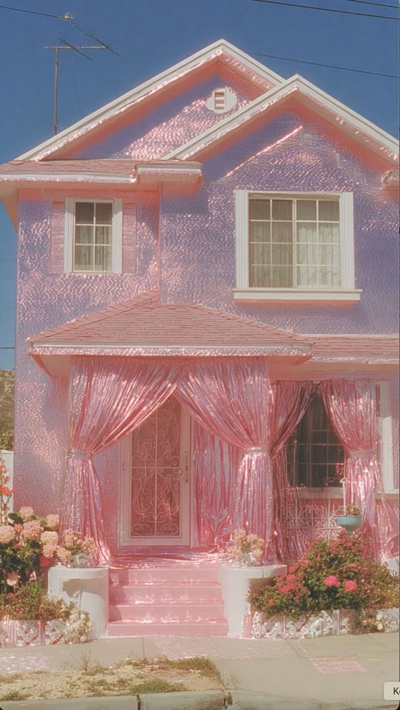
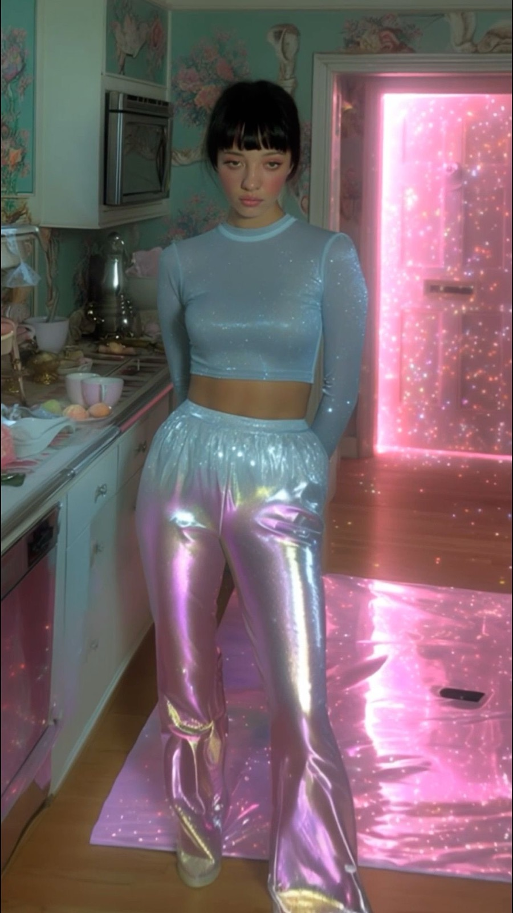
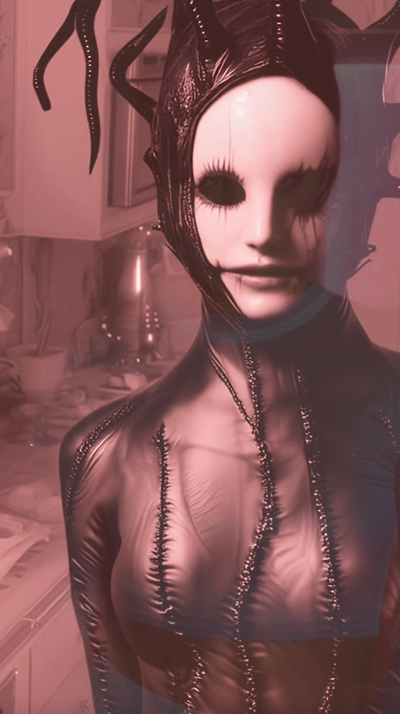
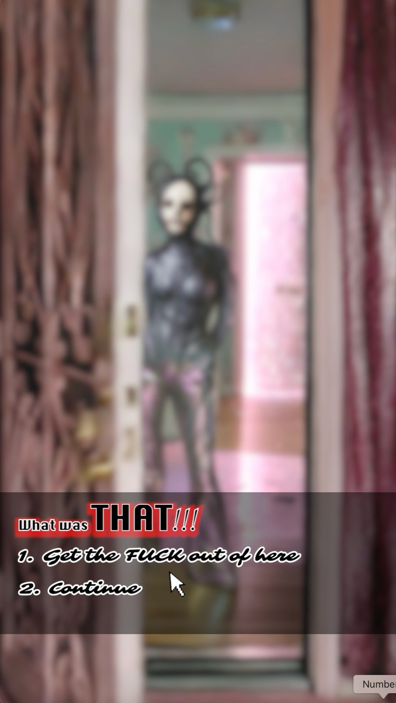

Image / in progress
You’re Late, Rabbit
An in-progress vertical horror quest built in two parts, where a glitter-pink house turns hostile and the viewer is handed a numbered choice at the exact moment they would rather look away.
- Year
- 2026
- Kind
- Image
- Role
- Concept, art direction, generative production, edit
- Frames
- 9:16 vertical, branching two-part quest
The format
Pink first, then the thing in the doorway.
The whole set is lit like a birthday. Holographic vinyl, sequin walls, sugar-pink light through every door. The horror is not introduced by a change of grade, it simply walks into a room that stays exactly as sweet as it was.




Structure
Two parts, one branch each.
The quest is not a story with an ending, it is a set of doors. Each part builds to a reveal and then stops to ask the viewer whether they are still in.
-
Part I
The house
A pink interior, a girl dressed to match it, and something already standing in the next room.
-
Choice
“What was THAT!!!”
Two numbered options: leave now, or continue. The blur holds until you pick.
-
Part II
The rabbit
The masked figure gets a face, a close-up, and the run of the house.
How it is being built
Pipeline.
Shot as vertical stills, animated in passes, then cut into two parts with the branch points written into the edit rather than bolted on afterwards.
One palette of glitter, foil and sequin, applied to house, wardrobe and light alike.
Two figures only: the girl who belongs in the room and the one who does not.
Vertical stills brought to motion, keeping the flat front-on framing of a doorway.
Choice overlays timed to the reveal, cut so the menu lands on the held frame.
Open the work